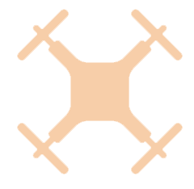

Hola, soy
Victor Massagué Respall
un Ingeniero de Software de Robótica de Barcelona

Soy un ingeniero de software de robótica apasionado de los drones. Mi área de interés cae en la intersección entre inteligencia artificial y robótica. Estoy focalizado en diseñar algoritmos de planificación de rutas que mejoran las habilidades y seguridad de los robots móviles.
Mi objetivo ambicioso es diseñar software para robots autónomos que nos ayudarán a explorar el espacio.
Durante mi tiempo libre normalmente juego al fútbol, escucho música, cocino algo bueno y quedo con amigos.
Fecha de nacimiento: 3 de Agosto 1996
Email: vmassague5@gmail.com
Móvil: +7-950-328-04-29
Localización: 420500, Innopolis, Rusia
Agosto 2017 - Junio 2018
Info: Programa de mobilidad por 2 semestres
Lugar: Innopolis, Rusia
Septiembre 2014 - Junio 2018
Especialización: Computación
Lugar: Barcelona, España
Junio 2019 - Julio 2019
Lugar: Innopolis, Rusia
Durante la práctica, se desarrolló un algoritmo completo basado en el planificador Next-Best View para explorar, utilizando el drone DJI M100, una zona desconocida delimitada equipada con Velodyne LIDAR para crear un mapa 3D en línea.
Abril 2020 - Mayo 2020 | Innopolis University, Innopolis, Rusia
Feb 2019 - Mayo 2019 | Innopolis University, Innopolis, Rusia
Nov 2017 - Dic 2017 | Innopolis University, Innopolis, Rusia
Una técnica sencilla para la detección de posturas con la independencia de los tuits de Cataluña. Se
utilizan funciones de inserción de palabras word2vec para esta detección. El sistema ha producido el
mejor resultado para tuits españoles en comparación con otros participantes en IberEval 2017.
[pdf |
Github]
Feb 2017 - Jun 2017 | Universidad Politécnica de Cataluña, Barcelona, España
Trabajé con dos compañeros desarrollando un lenguaje de programación para facilitar el proceso de
programación de los robots Lego Mindstorms. Además, incluye pedidos predefinidas que simplifican un
número significativo de líneas de código. Finalmente, incluye un compilador que envía el código directamente
al robot. El proyecto se hizo con Java y ANTLR3.
[pdf |
Github]
Sept 2016 – Dic 2016 | Universidad Politécnica de Cataluña, Barcelona, España
Feb 2016 – Maig 2016 | Universidad Politécnica de Cataluña, Barcelona, España
HeteSim es un programa para realizar búsquedas relacionales (y normales / simples) en una base de datos
compuesta como gráfico, utilizando la medida HeteSim para la relación entre gráficos heterogéneos.
La base de datos que se utiliza para la implementación es la colección de nombres de diferentes elementos
(de diferentes tipos) de una biblioteca pública de informática.
[Github]

Mayo 2013 – Dic 2013 | INS Molí de la Vila, Capellades, España
Este fue mi proyecto final de secundaria. Consiste en un modelo de 80x50cm de una casa, aplicando diferentes automatizaciones. Por ejemplo, los sensores de las luces del jardín cuando oscurece o una puerta automatizada de apertura / cierre cuando un coche se acerca. Todo el proyecto se programó con Arduino funcionando a bordo de dos placas Arduino UNO.
No dudes en contactarme en qualquier momento por email o teléfono.
110 Sportivnaya Street, Innopolis, Rusia, 420500
{kind=link}
{kind=link}
{kind=link}
{kind=link}
{kind=link}
{kind=link}